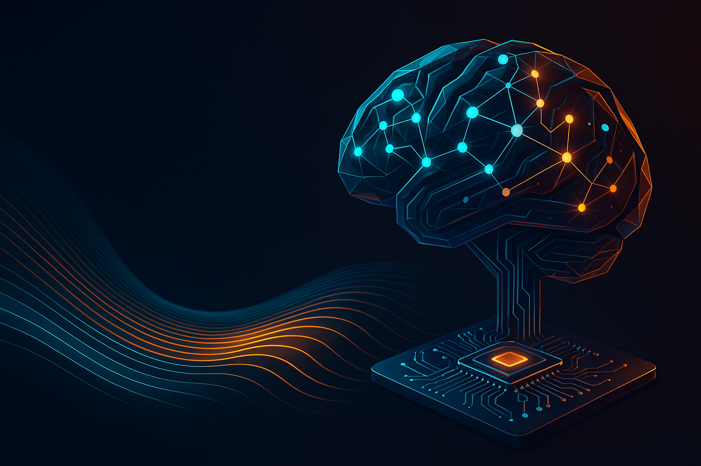

AI Readiness Assessment
We analyze workflows, data landscape, and business objectives to reveal where AI creates measurable value.
We help businesses harness the power of AI — thoughtfully, efficiently, and responsibly. From strategy to implementation, we turn your data into decisions and your vision into value.

Ocure Analytics is a boutique AI consultancy specializing in the practical and ethical application of artificial intelligence. We help organizations identify real opportunities for AI integration — not just experiments, but systems that deliver measurable results.
From on‑prem inference systems to cloud‑based deployments — we design efficient, secure, and maintainable AI architectures, integrate them with your systems, and enable your teams to adopt and evolve them.
We analyze workflows, data landscape, and business objectives to reveal where AI creates measurable value.
End‑to‑end design of robust systems: on‑prem inference, hybrid setups, and cloud‑native deployments.
Model selection, MLOps pipelines, security, monitoring, and seamless integration with existing tools.
Hands‑on upskilling and governance frameworks so AI becomes a sustainable organizational capability.
Beyond our own consulting practice, Ocure Analytics is a representative and consultancy partner for a select group of European, sovereignty‑first AI products. We help you evaluate them, choose the right setup, and put them into production — with hands‑on guidance at every step.
“Your process, as a service.”
Abstractor turns your existing business processes into running, governed AI services — without code or prompt engineering. You upload the documents that describe how the work gets done (SOPs, policies, templates), show a handful of input/output examples, and describe the rules in plain language. Abstractor deploys it as a live service behind an API or webhook, where every decision is logged with a signed, tamper‑evident audit trail. It runs on EU‑sovereign infrastructure — no data leaves the EU — with compliance tooling for the EU AI Act and GDPR built in. As a representative and consultancy partner, Ocure Analytics helps you identify the right processes, model them, and put them safely into production.
“Run state in the EU, and prove it.”
Epher Compute Chain — built by GINF Systems on the open Ephernity protocol — lets you run state in the EU and prove it, then compute on it deterministically. It combines two first‑class pillars on one EU‑attested substrate: tamper‑evident, hardware‑attested storage with retention from milliseconds to years, and deterministic workflows whose every call can be replayed byte‑for‑byte and verified by anyone — even offline. Operated end‑to‑end by an EU entity with post‑quantum signing, it is built for regulated workloads where “who wrote what, when” and “how was this decided” must stand up to an auditor. Ocure Analytics provides representation and hands‑on consultancy to help you choose the right edition and integrate verifiable storage and compute into your systems.
A lean, collaborative approach designed for clarity, speed, and measurable outcomes.
Stakeholder interviews, workflow and data audit; quick wins vs. strategic bets.
Architecture blueprints, proof‑of‑concepts, success metrics, and risk assessment.
Integration, rollout, monitoring, and training — with a clear path to scale.
We believe AI is not about replacing people — it’s about augmenting human insight. Our mission is to make artificial intelligence accessible, transparent, and genuinely useful for every organization we work with.
Tell us where you want to create value — we’ll help you get there.